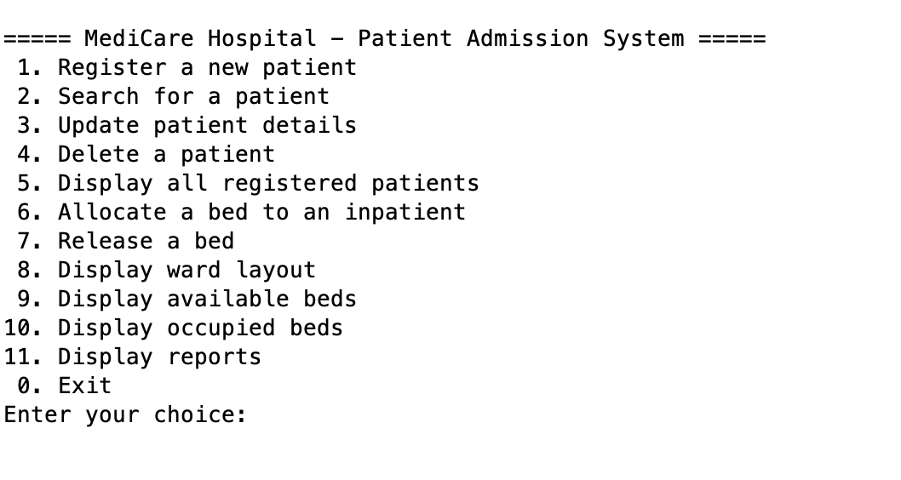

Hospital App Project
Description and purpose
A small console based application coded in Java that lets you save and register patient data and lets you allocate beds to patients with ease. It also allows the user to see the ward layout and occupied and free beds. The cherry on top is that it can display reports of all patients in the hostpital that have been saved.
Technologies used